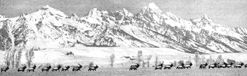
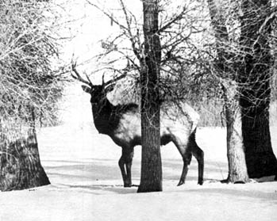
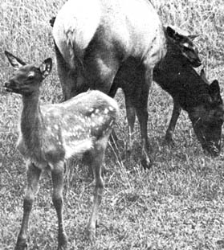

Few states had game laws at the turn of the century and wild meat was offered to the housewife along with beef, pork and mutton. Wild pigeons were, for a time, so plentiful that often only the breasts were taken and salted down for future use. Deer hams were cheaper than pork and prime elk meat, which discriminating gourmets preferred was always at a premium to the finest cuts of farm-raised, stall-fattened beef. Knowing this, General George W. Russ, one time adjutant general for the state of Indiana, decided to try domesticating and producing the elk.
General Russ had fallen victim to a respiratory ailment and when he failed to respond to accepted treatments of the day, his doctors advised him to go west on the theory that a change of climate might speed recovery. Russ located first in Western Texas but found little benefit in that hot, dry plains country. Friends then told him about the health-giving waters of Eureka Springs and the salubrious climate of the Arkansas Ozarks. He came to investigate, was immediately enchanted, his family joined him and Russ' health improved so much that he soon sought an outlet for his renewed energy and ambition.
Like many others, General Russ' attachment for the Ozarks found expression in the purchase of large tracts of the cheap, hilly and rocky brushland which was too rough for ordinary farming or grazing. Russ set about finding uses for the property and first introduced Angora goats-hoping they would clear the tangles of underbrush and prove profitable-but wolves, renegade dogs and other predators could not be held in check and the thickets were not conquered by the goats.
In 1903 the General bought a small herd of elk in Northern Missouri and established the animals on a thousand-acre ranch on the John Creek branch of the White River in Carroll County. This was rough terrain that had grown up to an impenetrable jungle of vines, underbrush and scrubby second growth hardwoods after the commercial timber had been cut. There were then and are now millions of acres of sucland in many sections of the country for which no commercial use has been established.
General Russ had the land fenced and employed a rider to watch over the animals and keep the fence in repair. He believed that elk could be tamed and would live and thrive on range that would not support beef, sheep or goats and his experience proved this to be correct; so much so, that his success was reported by the U.S. Department of Agriculture in a bulletin of the Biological Survey issued December 31, 1910, entitled: Raising Deer and Other Large Animals in the United States.
"Elk," said the General, "are much better adapted to forest grazing and browsing than goats. They are able to defend themselves and protect their young from wolves and other predators. Furthermore, they do not damage useful trees by gnawing at the bark or girdling them, as do goats. They can feed on leaf buds and twigs as high as eight feet above ground, twice the reach of a goat."
Foraging elk, the General found, have a beneficial effect on rangeland. Elk do not feed on evergreens and pine and cedar are not damaged by their browsing. By clearing out grapevines, berry bushes, green brier and buck brush and removing the lower branches of the hardwoods, elk encourage the growth of desirable specimen trees by allowing more sunlight and improved ventilation to reach them.
Although he advocated open range and central feeding for the elk herds that were soon developed in the larger National Parks, General Russ preferred a fenced enclosure for his own needs. The cost of this fencing was reasonable as the posts were cut from red cedar growing on his land.
A ready and profitable market for all the elk meat Russ could produce was found in St. Louis where the finer hotels and restaurants proudly featured it on their menus.
General Russ demonstrated that domesticated and under fence, elk can be raised at less cost than beef, pork or mutton.
Elk are more useful than goats for clearing underbrush; they are more hardy and required much less atten tion. Nature provides them with a winter coat which is ample protection during severe weather and they can take shelter in brush and cedar breaks, thus eliminating the need for sheds or housing.
Further experiments have shown that elk are fond of grain and can be fattened on it like cattle but at much less cost for they need only half the rations required for a beef animal. Unlike cattle, they can be carried through the winter on very little or no supplemental roughage, especially in sections of light snow, such as the Ozarks. But elk thrive also in the high country of the Rocky Mountains and herds in Yellowstone National Park multiply with minimal protection, needing only to be protected from their most serious predator, man. Indeed, just a few years ago the Yellowstone National Park elk increased beyond the capacity of their forage, and it was necessary to harvest some 600 animals to bring their numbers down to a reasonable herd for the range.
Many of General Russ' recommendations for managing and domesticating wild game, such as deer, elk, buffalo, longhorn cattle, wild turkeys, beaver, antelope, et cetera, have been followed by state and national wild life commissions. Primary problems seem to be to provide adequate range and protection from man. After that, Nature will take its course. Supervision must be provided to prevent poaching and slaughter from renegade dogs but with this accomplished deer, antelope, elk, buffalo and other big game quickly build up until their very numbers demand harvesting to prevent loss from starvation and permanent damage to the environment.
General Russ also found that profitable sidelines to elk ranching can be developed. Tourists and summer visitors expressed such keen interest that he was forced to keep a small herd of the stately animals penned near his home where they could be viewed as in a zoological park. Excursion trains ran from Eureka Springs to Elk Ranch and in time a small town developed with the General as first postmaster. Big game hunters eagerly paid for the privilege of bagging an elk (even a ranch-raised one!) and displaying the trophy.
Unfortunately, the General's health soon failed again and he was forced to dispose of his holdings. The new owner did not fully appreciate the opportunities: he dismissed the fence rider, the elk herd was dispersed and most of the animals soon fell before the guns of eager and unrestricted hunters. The ranch buildings were allowed to decay and little remains today except a few vine-covered mounds to mark the old foundations. Now that nearby Table Rock Lake has been formed by impounding flood waters of the White River, the thousand-acre ranch has been incorporated into a vacation and retirement development.
Archeologists interested in reconstructing the past have found proof that elk once roamed over almost all of North America from the frozen north to the near tropical regions of the Gulf states and into northern Mexico. Daniel Boone killed elk in Kentucky and Ohio in the 1780's. The earliest settlers along the Cumberland eagerly hunted elk, and the frontiersmen found them in the Ozarks and as far west as Oklahoma and the Indian Territory.
Biologists tell us that elk were originally plains animals and at one time-perhaps thousands of years ago-outnumbered even the immense herds of buffalo that often blackened the prairie. It is believed that the elk were decimated and forced into rough, hilly mountain fastnesses by the pressure of hunting. Early man preferred elk meat, (just as do today's hunters) and the big, unwary creatures were more easily killed than the small, agile deer. Elk skins made clothing and tent coverings and the meat from one kill would supply a family for several days. Even the bones and antlers were used in toolmaking and weaponry. It is probable that early man followed and lived on the elk herds just as later Indians followed the buffalo herds and as Eskimo follow and harvest the caribou. Indeed, General Russ demonstrated that elk can be tamed and domesticated just as easily as the reindeer or the musk ox and probably, because of their size, much more profitably.
Re-establishing elk in the wilderness as a game animal is probably not in the cards because the very size of mature animals makes them easy prey to the high-powered rifles of modern hunters. But with population pressures building in metropolitan areas far from the few remaining game-producing sections, it is becoming more and more acceptable for eager sportsmen to turn to private hunting preserves. Here, for a price, they are assured of comfort and a trophy specimen. Surplus animals are then harvested as necessary and sold as superior meat for the gourmet patrons of the better restaurants.
The possibilities of elk ranching as a wilderness livelihood for those who prefer life in the open, far from the crowded cities, are considerably greater than in General Russ' day and certainly warrant careful study and consideration.
|
 |
 |
 |